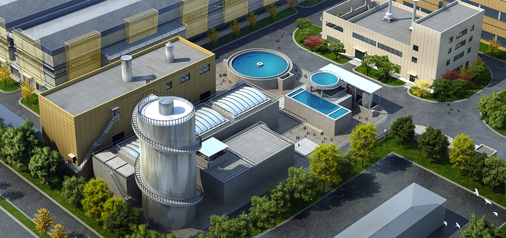
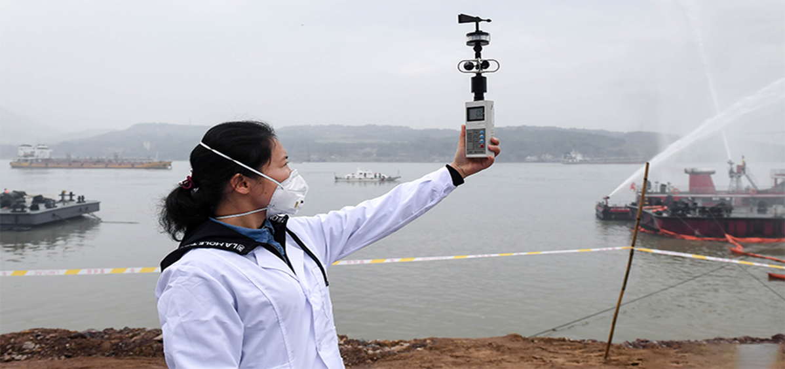
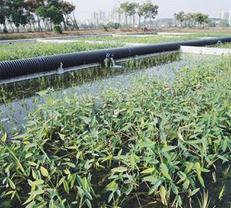
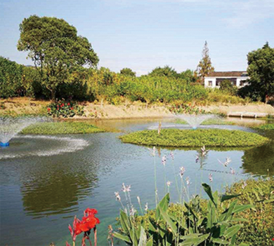
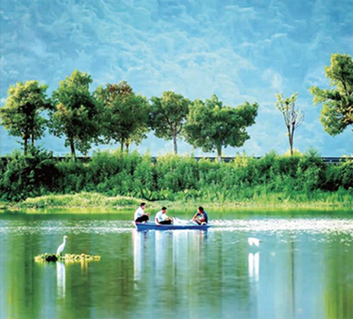

您的位置：首页>解决方案> 智慧环保
污水厂可视化智能控制平台
整合物联网、智能算法、5G通信、虚拟仿真等先进技术， 集监测、控制、辅助决策、应急保障等功能，为企业、乡镇污水处理提供高效、 节能、可靠的软硬件集成平台。
第三方环保监测运营服务
提供环境监测设备、实施调试安装、组织管理人力资源等服务。 提供监测数据报告、超标警报、风险应急、运维管理、总结汇报等服务。
养殖尾水水质监测与治理
微云已开展低温菌种的产业化，该菌种在低温环境中仍保持生物降解特性， 可有效提高冬季尾水净化效率，配合自动监测、自动控制、无人巡查抽测技术， 养殖尾水经处理后排放可达到农业部《淡水池塘养殖水排放要求》（SCT9101-2007）。


